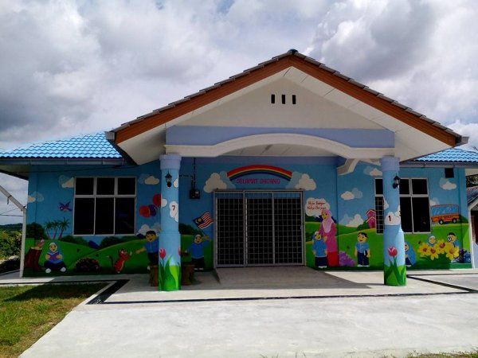
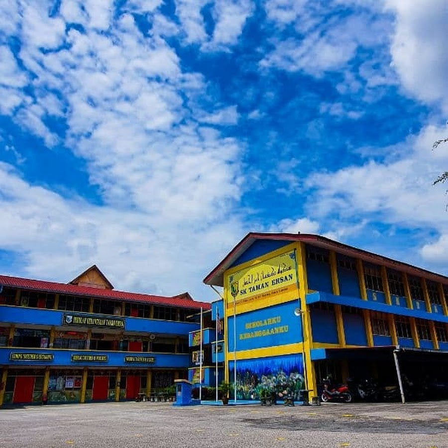
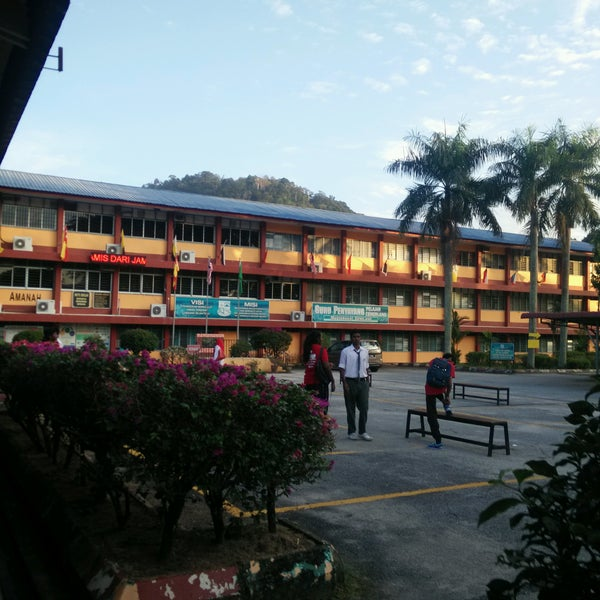
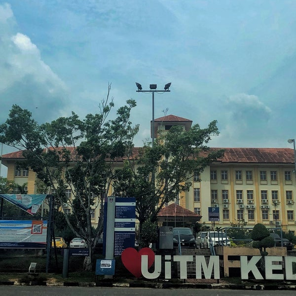

Kindergarten
When I was in kindergarten, I had the delightful opportunity to study at Tadika Kemas, located in the charming neighborhood of Bandar Baru Sungai Buloh, Selangor. This enchanting place, with its vibrant and colorful surroundings, was a haven of joy and discovery. The cheerful atmosphere, adorned with playful decorations and lively murals, made each day an adventure. The nurturing environment at Tabika Kemas not only fostered my early education but also filled my childhood with wonderful memories of learning, laughter, and friendship. Tap on the picture below to go to the school that I attended for kindergarten website and know more about it!
Middle School
I went to Sekolah Kebangsaan Taman Ehsan for middle school, where I gained a solid foundation in a variety of subjects and participated in extracurricular activities that molded my character and skills. In addition, the school provided me with many experiences and opportunities to learn new things. To add on, it was the place that I started my small life, where I slowly tried to understand the world better under the guidance of the teachers. In summary, this school truly makes me happy. Tap on the picture below to go to my middle school website and know more about my middle school!
High School
I attended Sekolah Menengah Kebangsaan Taman Ehsan for my high school education. There, I excelled academically and participated in a variety of clubs and sports to help me be ready for both the academic and personal difficulties that were ahead. This school has taught me numerous fascinating facts. I really participated in a dance gimrama that I directed, which is one of the reasons I was eager to start school. In addition, I was a proactive student who helped out with rewards for extracurricular activities, outstanding marks, and many other things. In conclusion, I would say that my time in high school was among the best experiences of my life, and if necessary, I would go through it all over again. Tap on the picture below to go to my high school website and know more about my high school!
University
At UiTM Merbok in Sungai Petani, Kedah, I pursued my further education. I majored in a topic of my interest and took part in research projects and internships that gave me real-world experience in the sector of my choice. I frequently took part in academic activities that gave me coupons to stay in the on-campus dorm. Despite my busy schedule at university, I still try my best to be an active student, even though I'm not as involved as I was in middle and high school. Now, I still continuing my studies for a diploma in information management, concentrating on library informatics in semester four. With God willing, I hope to graduate with honors. Tap on the picture below to go to my university website and know more about my university!
